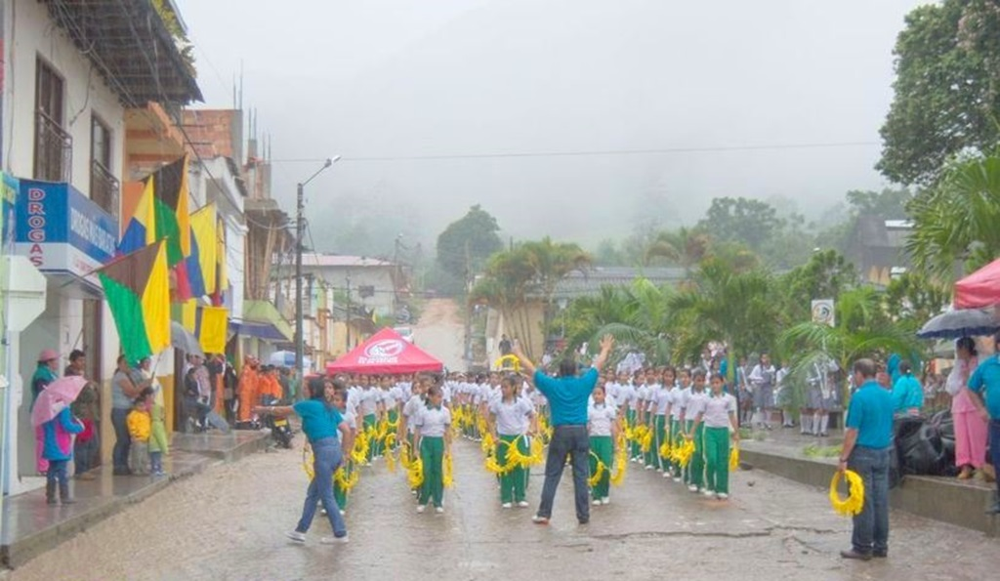
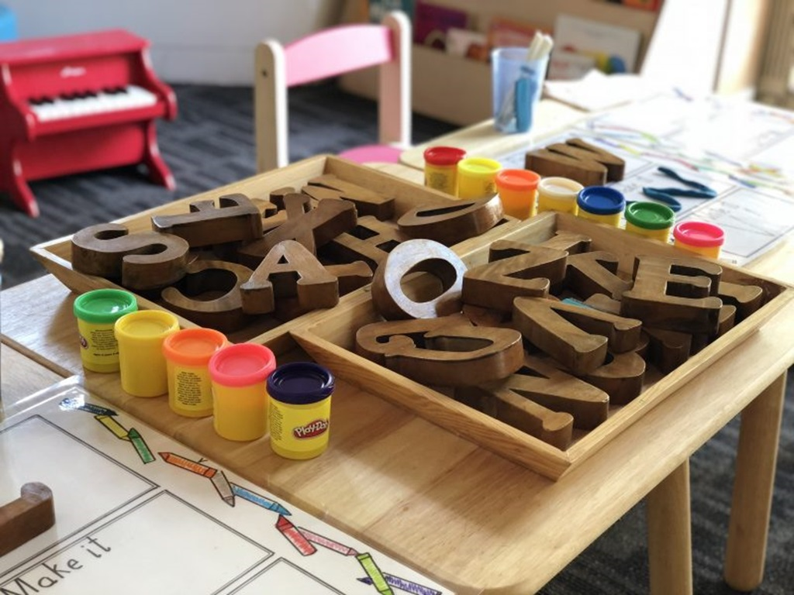

La finalidad de la Educación Primaria es facilitar el aprendizaje de la expresión y comprensión oral y escrita, de la lectura y del cálculo; la adquisición de habilidades lógico-matemáticas y de nociones básicas de la cultura; fomentar hábitos de convivencia, y hábitos de estudio y de trabajo, y promover la afectividad, la creatividad y el sentido artístico. La Educación Primaria es la primera etapa obligatoria y gratuita del sistema educativo. Se organiza en tres ciclos y se extiende a la largo de seis cursos académicos, normalmente entre los 6 y los 12 años de edad. El primer ciclo está formado por los cursos 1º y 2º; el segundo ciclo por 3º y 4º; y el tercer ciclo por 5º y 6º. Dado su carácter obligatorio, deben incorporarse a esta etapa todas las niñas y los niños en el año natural que cumplan los 6 años, independientemente de si han realizado o no la Educación Infantil.
 